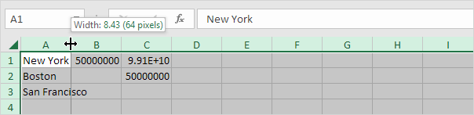

Introduction
Range
Gunakan IsiOtomatis di Excel untuk mengisi serangkaian sel secara otomatis. Halaman ini berisi banyak contoh IsiOtomatis yang mudah diikuti.
Misalnya, masukkan nilai 10 ke dalam sel A1 dan nilai 20 ke dalam sel A2.

Pilih sel A1 dan sel A2 dan seret gagang isian ke bawah. Pegangan isian adalah kotak hijau kecil di kanan bawah sel yang dipilih atau rentang sel yang dipilih.

Catatan: IsiOtomatis mengisi angka berdasarkan pola dua angka pertama.
Masukkan Jan ke sel A1.

Pilih sel A1 dan seret gagang isian ke bawah. IsiOtomatis secara otomatis mengisi nama bulan.

Masukkan Produk 1 ke dalam sel A1.

Pilih sel A1 dan seret gagang isian ke bawah. IsiOtomatis secara otomatis mengisi nama produk.

Masukkan Friday ke sel A1.

Pilih sel A1 dan seret gagang isian ke bawah. IsiOtomatis secara otomatis mengisi nama hari.

Masukkan tanggal 14/1/2019 ke dalam sel A1.

Pilih sel A1 dan seret gagang isian ke bawah. IsiOtomatis mengisi hari secara otomatis.

Alih-alih mengisi hari, gunakan opsi IsiOtomatis untuk mengisi hari kerja (mengabaikan hari akhir pekan), bulan (lihat contoh di bawah) atau tahun.

Catatan: lihat juga opsi untuk mengisi pemformatan saja dan untuk mengisi rangkaian tanpa pemformatan.
Masukkan tanggal 14/1/2019 ke dalam sel A1 dan tanggal 21/01/2019 ke dalam sel A2.

Pilih sel A1 dan sel A2 dan seret gagang isian ke bawah. IsiOtomatis secara otomatis mengisi tanggal berdasarkan pola dua tanggal pertama.

Masukkan waktu 6:00 pagi ke sel A1.

Pilih sel A1 dan seret gagang isian. IsiOtomatis mengisi waktu secara otomatis.

Jika Excel tidak mengenali daftar, cukup buat daftar kustom .


Gunakan flash fill di Excel 2013 atau yang lebih baru untuk mengekstrak secara otomatis atau menggabungkan data secara otomatis.


Jika Anda memiliki Excel 365, Anda juga dapat menggunakan fungsi SEQUENCE untuk mengisi serangkaian sel. Fungsi ini cukup keren.
Fungsi SEQUENCE di bawah ini menghasilkan array dua dimensi. Baris = 7, Kolom = 4, Mulai = 0, Langkah = 5.

Fungsi SEQUENCE di bawah ini menghasilkan daftar angka ganjil. Baris = 10, Kolom = 1, Mulai = 1, Langkah = 2.

Catatan: fungsi SEQUENCE, dimasukkan ke dalam sel A1, mengisi beberapa sel. Wow! Perilaku ini di Excel 365 disebut menumpahkan.
Sangat mudah untuk membuat segala macam urutan di Excel. Misalnya, barisan Fibonacci.
1. Dua angka pertama dalam deret Fibonacci adalah 0 dan 1.

2. Setiap bilangan berikutnya dapat ditemukan dengan menjumlahkan dua bilangan sebelumnya.

3. Klik di sudut kanan bawah sel A3 dan seret ke bawah.
Hasil. Deret Fibonacci di Excel.

Jika Anda membuat daftar kustom di Excel, Anda dapat dengan mudah mengisi rentang dengan daftar departemen, klien, kota, nomor kartu kredit Anda sendiri, dll. Ini dapat menghemat waktu dan mengurangi kesalahan.
Pertama, kita akan melihat contoh daftar bawaan.
1. Ketik Sun ke dalam sel B2.

2. Pilih sel B2, klik di sudut kanan bawah sel B2 dan seret ke sel H2.

Bagaimana Excel mengetahui hal ini?
3. Pada tab File, klik Opsi.
4. Di bawah Lanjutan, buka Umum dan klik Edit Daftar Kustom.

Di sini Anda dapat menemukan daftar 'hari dalam seminggu' bawaan. Perhatikan juga daftar 'bulan dalam setahun'.
5. Untuk membuat daftar kustom Anda sendiri, ketik beberapa entri daftar, dan klik Tambah.

Catatan: Anda juga dapat mengimpor daftar dari lembar kerja.
6. Klik Oke.
7. Ketik London ke dalam sel C2.

8. Pilih sel C2, klik di sudut kanan bawah sel C2 dan seret ke bawah ke sel C5.

Catatan: daftar kustom ditambahkan ke registri komputer Anda, sehingga Anda bisa menggunakannya di buku kerja lain.
SisipkankomentardiExcel2019 untuk memulai percakapan atau memberikan umpan balik tentang konten sel.Komentar gaya lama masih tersedia dan sekarang disebut catatan.
Untukmenyisipkan komentar, jalankan langkah-langkah berikut.
1. Pilih sel.
2. Klik kanan, lalu klik Komentar Baru.
Tips: untuk menyisipkan komentar gaya lama, klik Catatan Baru.
3. Ketik komentar Anda dan posting.

Excel menampilkan indikator ungu di sudut kanan atas sel.
4. Arahkan kursor ke sel untuk melihat komentar.

5. Untuk mengedit komentar, arahkan kursor ke komentar dan klik Edit.
6. Orang lain sekarang dapat membalas komentar Anda.

Tips: gunakanOneDriveuntuk berbagi file Excel Anda dengan orang lain.
Untuk menghapus komentar, jalankan langkah-langkah berikut.
1. Pilih sel dengan komentar.
2. Klik kanan, lalu klikHapus Komentar.

Untuk melihat semua komentar dalam file Excel, jalankan langkah-langkah berikut.
1. Pada tab Tinjau, di grup Komentar, klik Perlihatkan Komentar.
Tips: daripada menggunakan tab Tinjau, cukup klik tombol Komentar di sudut kanan atas pita.

Excel membuka panel Komentar dengan semua komentar dalam file Excel ini.

Tips: Anda juga dapat menggunakan panel ini untuk mengedit, membalas, dan menghapus komentar.
Terkadang berguna untukmenyembunyikan kolomataubarisdiExcel.
Untuk menyembunyikan kolom, jalankan langkah-langkah berikut.
1. Pilih kolom.

2. Klik kanan, lalu klik Sembunyikan.

Hasil:

Catatan: untuk menyembunyikan baris, pilih satu baris, klik kanan, lalu klik Sembunyikan.
Untukmemperlihatkankolom, jalankan langkah-langkah berikut.
1. Pilih kolom di kedua sisi kolom tersembunyi.

2. Klik kanan, lalu klik Perlihatkan.

Hasil:

Catatan: untuk memperlihatkan baris, pilih baris di kedua sisi baris tersembunyi, klik kanan, lalu klik Perlihatkan.
Untuk menyembunyikan beberapa kolom, jalankan langkah-langkah berikut.
1. Pilih beberapa kolom dengan mengklik dan menyeret header kolom.

2. Untuk memilih kolom yang tidak berdekatan, tahan CTRL sambil mengklik header kolom.

3. Klik kanan, lalu klik Sembunyikan.
Hasil:

Untuk memperlihatkan semua kolom, jalankan langkah-langkah berikut.
4. Pilih semua kolom dengan mengklik tombol Select All.

5. Klik kanan tajuk kolom, lalu klik Perlihatkan.
Hasil:

Catatan: dengan cara yang sama, Anda dapat menyembunyikan dan menampilkan beberapa baris.
Buat bos Anda terkesan dengan trik tersembunyi :-) berikut.Untuk menyembunyikan dan menampilkan kolom dengan mengklik tombol, jalankan langkah-langkah berikut.
1. Pilih satu atau beberapa kolom.

2. Pada tab Data, dalam grup Kerangka, klik Grup.

3. Untuk menyembunyikan kolom, klik tanda minus.

4. Untuk menampilkan kolom lagi, klik tanda plus.

Catatan: untuk memisahkan kolom, pertama, pilih kolom.Selanjutnya, pada tab Data, di grup Outline, klik Ungroup.
Terakhir, untuk menyembunyikan sel di Excel, jalankan langkah-langkah berikut.
1. Pilih rentang sel.

2. Klik kanan, lalu klik Format Sel.
Kotak dialog 'Format Sel' muncul.
3. Pilih Kustom.
4. Ketik kode format angka berikut:;;;
5. Klik Oke.

Hasil:

Catatan: data masih ada.Cobalah sendiri.Unduh file Excel, sembunyikan sel, pilih salah satu sel tersembunyi dan lihat bilah rumus.
Gunakan opsi 'Tempel Spesial Lewati Kosong' dan Excel tidak akan menimpa nilai yang ada dengan kosong.
1. Pilih rentang B1:B12.
2. Klik kanan, lalu klik Salin.

3. Pilih sel A1.
4. Klik kanan, lalu klik Tempel Spesial.
5. Centang Lewati Kosong.

6. Klik Oke.

Anda mungkin tahu cara mengubah lebar kolom di Excel , tetapi apakah Anda juga tahu cara memasukkan entri terluas secara otomatis ke dalam kolom?
Lebar default kolom adalah 64 piksel.
1. Anda dapat mengubah lebar kolom dengan mengklik dan menyeret batas kanan header kolom.

2. Untuk secara otomatis memasukkan entri terluas dalam sebuah kolom, klik dua kali batas kanan header kolom.

3. Untuk menyesuaikan beberapa kolom secara otomatis, pertama-tama pilih beberapa kolom dengan mengklik dan menyeret header kolom.

Catatan: untuk memilih kolom yang tidak berdekatan, tahan CTRL sambil mengklik header kolom.
4. Selanjutnya, klik dua kali batas kanan salah satu header kolom.

5. Untuk mengubah lebar semua kolom, pertama-tama pilih semua kolom dengan mengklik tombol Pilih Semua.
6. Selanjutnya, ubah lebar kolom.

Teknik yang dijelaskan di atas juga dapat digunakan untuk mengubah ketinggian baris. Alih-alih mengklik batas kanan tajuk kolom, cukup klik batas bawah tajuk baris. Ada satu cara lagi untuk menyesuaikan kolom atau baris secara otomatis.
1. Pertama, pilih beberapa baris dengan mengklik dan menyeret header baris.

2. Pada tab Beranda, dalam grup Sel, klik Format.

3. Klik Paskan Otomatis Tinggi Baris.

Hasil:

Catatan: Anda juga dapat menggunakan teknik ini untuk mengatur tinggi baris atau lebar kolom (lihat tangkapan layar pada langkah 3). Hati-hati, jangan berpikir dalam piksel di sini. Lebar default kolom adalah 8,43 unit dan tinggi default baris adalah 15,00 unit.
Gunakan opsi 'Tempel Transpose Khusus' untuk mengalihkan baris ke kolom atau kolom ke baris di Excel . Anda juga dapat menggunakan fungsi TRANSPOSE.
Untuk mentranspos data, lakukan langkah-langkah berikut.
1. Pilih rentang A1:C1.
2. Klik kanan, lalu klik Salin.

3. Pilih sel E2.
4. Klik kanan, lalu klik Tempel Spesial.
5. Periksa Transpos.

6. Klik Oke.

Untuk menyisipkan fungsi TRANSPOSE, jalankan langkah-langkah berikut.
1. Pertama, pilih rentang sel baru.
2. Ketik =TRANSPOSE(
3. Pilih rentang A1:C1 dan tutup dengan tanda kurung.

4. Akhiri dengan menekan CTRL + SHIFT + ENTER.

Catatan: Bilah rumus menunjukkan bahwa ini adalah rumus larik dengan mengapitnya dalam kurung kurawal {}. Untuk menghapus rumus array ini, pilih rentang E2:E4 dan tekan Delete.
Fungsi TRANSPOSE di Excel mengonversi sel kosong menjadi nol. Cukup gunakan fungsi IF untuk memperbaiki masalah ini.
1. Misalnya, sel B4 di bawah ini kosong. Fungsi TRANSPOSE mengonversi sel kosong ini menjadi nol (sel G3).

2. Jika kosong, fungsi IF di bawah ini mengembalikan string kosong (dua tanda kutip ganda tanpa apa pun di antaranya) untuk ditranspos.

Opsi 'Tempel Transpose Khusus' adalah cara yang bagus untuk mentranspos data tetapi jika Anda ingin menautkan sel sumber ke sel target, Anda memerlukan beberapa trik sulap.
1. Pilih rentang A1:E2.
2. Klik kanan, lalu klik Salin.
3. Pilih sel A4.
4. Klik kanan, lalu klik Tempel Spesial.
5. Klik Tempel Tautan.

Hasil.
6. Pilih rentang A4:E5 dan ganti semua tanda sama dengan xxx.

Hasil.

7. Gunakan ' Tempel Transpose Khusus ' untuk mentranspos data ini.

8. Pilih rentang G1:H5 dan ganti semua kemunculan 'xxx' dengan tanda sama dengan (kebalikan dari langkah 6).

Catatan: misalnya, ubah nilai di sel C2 dari 16 menjadi 36. Nilai di sel H3 juga akan berubah dari 16 menjadi 36.
Untuk membagi sel di Excel, tambahkan kolom baru, ubah lebar kolom dan gabungkan sel. Untuk membagi konten sel menjadi beberapa sel, gunakan panduan Teks ke Kolom, isian flash, atau rumus.
Gunakan trik berikut untuk membagi sel di Excel.
1. Misalnya, tugas B dimulai pada pukul 13:00 dan membutuhkan waktu 2 jam untuk menyelesaikannya.

Misalkan tugas B dimulai pada 13:30. Kami ingin membagi sel B3 dan mewarnai bagian kanannya.
2. Pilih kolom C.

3. Klik kanan, lalu klik Sisipkan.

Hasil:

4. Lebar default kolom adalah 64 piksel. Ubah lebar kolom B dan C menjadi 32 piksel.

5. Pilih sel B1 dan sel C1.
6. Pada tab Home, di grup Alignment, klik panah bawah di sebelah Merge & Center dan klik Merge Cells.

Hasil:

7. Ulangi langkah 5-6 untuk sel B2 dan sel C2 (dan sel B4 dan sel C4).
8. Ubah warna latar belakang sel B3 menjadi Tanpa Isi.
Hasil:

Catatan: misalkan tugas A berakhir pada pukul 15:30. Gunakan trik yang dijelaskan di atas untuk membagi sel E2. Unduh file Excel dan cobalah.
Untuk membagi konten sel menjadi beberapa sel , gunakan panduan Teks ke Kolom. Misalnya, mari kita pisahkan nama lengkap menjadi nama belakang dan nama depan.
1. Pilih rentang dengan nama lengkap.

2. Pada tab Data, dalam grup Alat Data, klik Teks ke Kolom.

Kotak dialog berikut muncul.
3. Pilih Dibatasi dan klik Berikutnya.

4. Kosongkan semua kotak centang di bawah Pembatas kecuali untuk kotak centang Koma dan Spasi.
5. Klik Selesai.

Hasil:

Catatan: contoh ini memiliki koma dan spasi sebagai pembatas. Anda mungkin memiliki pembatas lain dalam data Anda. Bereksperimenlah dengan mencentang dan menghapus centang pada kotak centang yang berbeda. Anda mendapatkan pratinjau langsung tentang bagaimana data Anda akan dipisahkan.
Apakah Anda suka Sihir? Alih-alih menggunakan panduan Teks ke Kolom, gunakan pengisian kilat untuk membagi data dengan cepat menjadi beberapa kolom .
1. Pertama, pisahkan konten satu sel menjadi beberapa sel.

2. Pilih sel B1 dan tekan CTRL + E (shortcut pengisian flash).

3. Pilih sel C1 dan tekan CTRL + E.

4. Pilih sel D1 dan tekan CTRL + E.

Catatan: pengisian kilat di Excel hanya berfungsi saat mengenali pola. Unduh file Excel dan cobalah. Kunjungi halaman kami tentang Isi Flash untuk mempelajari lebih lanjut tentang alat Excel yang hebat ini.
Salah satu kelemahan saat menggunakan alat ini adalah output tidak akan diperbarui secara otomatis ketika sumber data berubah. Buat formula untuk mengatasi keterbatasan ini. Mari kita pisahkan nama lengkap menjadi nama depan dan nama belakang.
1. Rumus di bawah ini mengembalikan nama depan.

2. Rumus di bawah ini mengembalikan nama belakang.

3. Pilih rentang B2:C2 dan seret ke bawah.

Catatan: kunjungi halaman kami tentang memisahkan string untuk memahami logika di balik rumus ini.
Gunakan isian flash di Excel 2013 atau yang lebih baru untuk mengekstrak secara otomatis atau menggabungkan data secara otomatis. Flash Fill di Excel hanya berfungsi saat mengenali sebuah pola.
Misalnya, gunakan flash fill di Excel untuk mengekstrak angka di kolom A di bawah ini.
1. Pertama, beri tahu Excel apa yang ingin Anda lakukan dengan memasukkan nilai 4645 ke dalam sel B1.

2. Pada tab Data, di grup Data Tools, klik Flash Fill (atau tekan CTRL + E).

Hasil:

Misalnya, gunakan isian flash di Excel untuk menggabungkan nama belakang di kolom A di bawah dan nama depan di kolom B di bawah untuk membuat alamat email.
1. Pertama, beri tahu Excel apa yang ingin Anda lakukan dengan memasukkan alamat email yang benar di sel C1.

2. Pada tab Data, di grup Data Tools, klik Flash Fill (atau tekan CTRL + E).
Hasil:

Misalnya, gunakan isian flash di Excel untuk memformat ulang angka di kolom A di bawah ini.
1. Pertama, beri tahu Excel apa yang ingin Anda lakukan dengan memasukkan nomor jaminan sosial yang benar di sel B1.

2. Pada tab Data, di grup Data Tools, klik Flash Fill (atau tekan CTRL + E).
Hasil:

Isi flash adalah alat Excel yang hebat. Namun, ia memiliki beberapa keterbatasan. Misalnya, gunakan flash fill di Excel untuk mengekstrak angka di kolom A di bawah ini.
1. Pertama, beri tahu Excel apa yang ingin Anda lakukan dengan memasukkan nilai 130 ke dalam sel B1.

2. Pada tab Data, di grup Data Tools, klik Flash Fill (atau tekan CTRL + E).
Hasil:

Catatan: isian flash tidak mengekstrak angka desimal dengan benar (hanya angka setelah titik desimal).
3. Pengisian flash terkadang membutuhkan sedikit bantuan. Segera setelah menjalankan langkah 2, ubah nilai di sel B3 menjadi 26.2 dan Excel akan mengekstrak semua angka desimal lainnya dengan benar untuk Anda.

4. Pengisian cepat di Excel tidak secara otomatis memperbarui hasil Anda saat data sumber Anda berubah. Misalnya, jika Anda mengubah nomor di sel A1 menjadi 200, Excel tidak akan memperbarui nomor di sel B1.

Untuk memindahkan kolom di Excel, gunakan tombol shift atau gunakan Insert Cut Cells. Anda juga dapat mengubah urutan semua kolom dalam satu gerakan ajaib.
Untuk memindahkan kolom di Excel dengan cepat tanpa menimpa data yang ada, tekan dan tahan tombol shift di keyboard Anda.
1. Pertama, pilih kolom.

2. Arahkan kursor ke batas seleksi. Panah empat sisi muncul.

3. Tekan dan tahan tombol Shift pada keyboard Anda.
4. Klik dan tahan tombol kiri mouse.

5. Pindahkan kolom ke posisi baru.

6. Lepaskan tombol kiri mouse.
7. Lepaskan tombol shift.
Hasil:

Untuk memindahkan beberapa kolom di Excel tanpa menimpa data yang ada.
8. Pertama, pilih beberapa kolom dengan mengklik dan menyeret header kolom.

9. Ulangi langkah 2-7.
Hasil:

Catatan: dengan cara yang sama, Anda dapat memindahkan satu baris atau beberapa baris di Excel.
Jika Anda lebih suka cara kuno, lakukan langkah-langkah berikut.
1. Pertama, pilih kolom.
2. Klik kanan, lalu klik Potong.

3. Pilih kolom. Kolom akan disisipkan sebelum kolom yang dipilih.

4. Klik kanan, lalu klik Sisipkan Sel yang Dipotong.

Hasil:

Catatan: dengan cara yang sama, Anda dapat memindahkan beberapa kolom, satu baris, atau beberapa baris.
Terakhir, Anda dapat mengubah urutan semua kolom dalam satu gerakan ajaib. Apakah kamu siap?
1. Pilih baris 1.
2. Klik kanan, lalu klik Sisipkan.

3. Gunakan baris pertama untuk menunjukkan urutan kolom yang baru (Penjualan, Kuartal, Negara, Nama Belakang).
4. Pilih datanya.

5. Pada tab Data, dalam grup Sort & Filter, klik Sort.

Kotak dialog Urutkan muncul.
6. Klik Opsi.

7. Klik Urutkan dari kiri ke Kanan dan klik OK.

8. Pilih Baris 1 dari daftar drop-down 'Urutkan berdasarkan' dan klik OK.

9. Hapus baris 1.
Hasil:

Catatan: teknik ini cukup mengesankan jika Anda perlu mengatur ulang urutan banyak kolom.